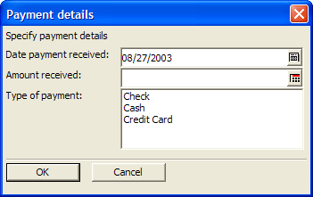
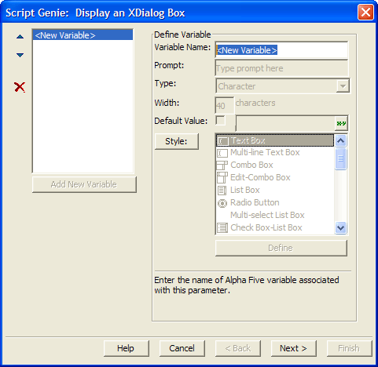
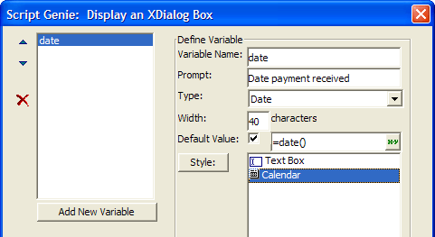
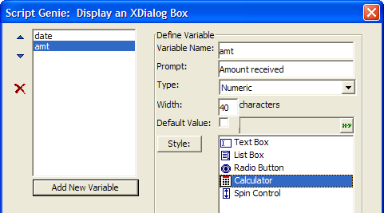
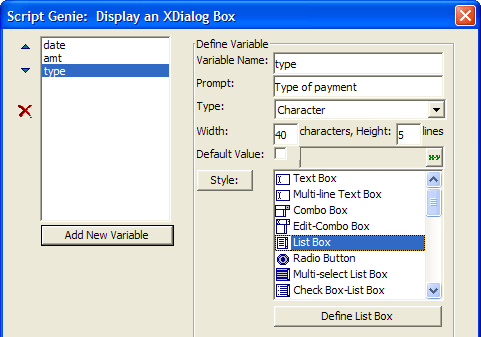
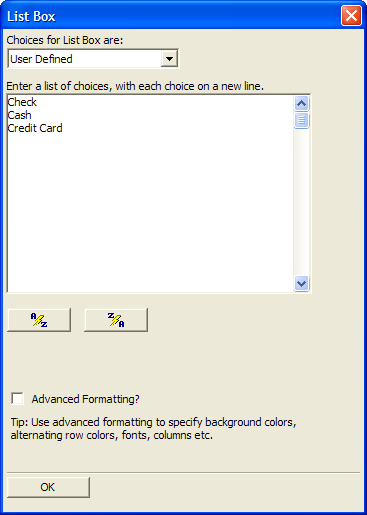
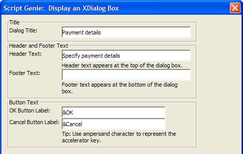
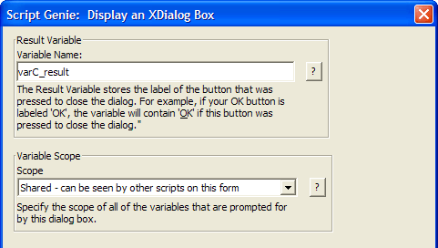
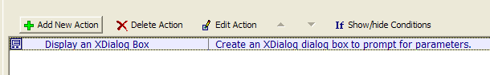
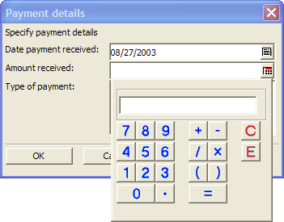

Using Xdialog to Prompt for Variables
In the previous lessons you have seen how we can use simple Action Script Actions to prompt for one variable at a time. We used the "Prompt for Text" Action and the "Prompt using Radio Button Dialog" Actions (under the "Dialog Boxes" category) to prompt for character variables.
Alpha Five contains a special programming language called Xdialog that is specifically designed for creating rich dialog boxes. Xdialog is a superset of Xbasic. A full discussion of Xdialog is beyond the scope of this book. For details on Xdialog, see Learning Xdialog.
Action Scripting however, offers an Action that allows you to create simple Xdialog boxes that prompt for multiple variables in a single dialog box. In this lesson, we'll create a dialog box that looks like this: Picture
{kind=link}

As you can see, this dialog box prompts for three different variables. Here is how you can create this dialog box.
Navigate to the Code tab on the Control Panel, click the New button and select Action Script. The Code Editor opens showing an untitled script.

Click the Add New Action button.
Select the "Dialog Boxes" category and the "Display an Xdialog Box" Action. Click OK.

The Display an Xdialog Box Genie appears. This is where you define the variables that the Xdialog box will prompt for. For each variable you place on the Xdialog box, you specify the variable:
name
prompt
type
size
default value
style
Alpha Five offers a very extensive list of styles from which you can choose, including list boxes, combo boxes, edit combo boxes, tree controls, file select controls, folder select controls etc.

Enter "date" as the Variable Name.
Enter "Date payment received" as the Prompt.
Select "Date" as the Type.
Check the Default Value check box. This allows you to specify a default value for the date variable, which should be today's date. To enter the required expression, you must start with an equals sign.
Enter "=date()" as the expression for the Default Value.
Select "Calendar" as the Style. Your screen should look like this: Picture
{kind=link}

We can now add the next variable to the Xdialog box. Click the Add New Variable button.
Fill in the details as shown below:
Note the various styles available for a numeric field. We will choose the "Calculator" style.

Now add the third variable to the Xdialog box. Click the Add New Variable button. Fill in the details as shown below:

TIP : Click the ? button to the right of the Style prompt to display examples of all the different styles.
Next you need to define the properties of the list box. Click the Define List Box button.
The List Box dialog box appears. The choices for the list box can be "User Defined," which means you will type in the list of possible choices for the list box to display. Alternatively, the choices for the list box can be "Computed Automatically."
This example does not use the "Computed Automatically" option in this example, although this option is extremely powerful. It can automatically populate the list box with the names of the reports, forms, browses etc. in the current database. It can also populate the list box with data that is stored in a table etc. Feel free to explore the options before continuing the lesson.
Enter "Check", "Cash" and "Credit card" as the options. Enter one option per line.

Click OK to close the dialog box.
Click Next > to proceed to the next Genie page.
Enter the dialog box title and header text as shown below:

Click Next >. This dialog screen allows you to specify the name of the dialog box result variable. This variable is different than the variables you placed on the dialog box on the previous screens. This variable allows you to "trap" whether the user clicked the OK button to close the dialog, or the Cancel button.
Accept the default entries and click Next > and Finish to close the Genie.

The Code Editor shows the Action you just added.

Click the Run Script button to test your script. The following Xdialog appears.
Click the Calendar button to the right of the Date payment received field. A pop-up calendar appears. Make any selection and the calendar closes and enters the selected date.

Click the Calculator button to the right of the Amount received field. A pop-up calculator appears.

When you click the OK button to close the dialog the variables that were included in this dialog box will be available to you in any subsequent Actions you choose to add to this script.